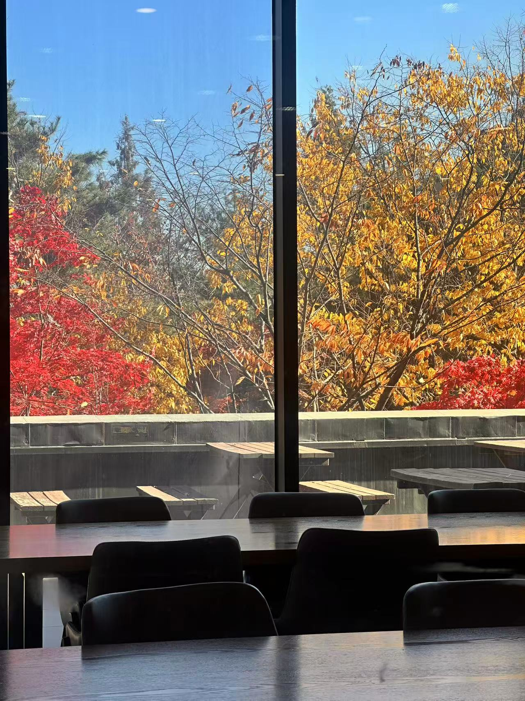
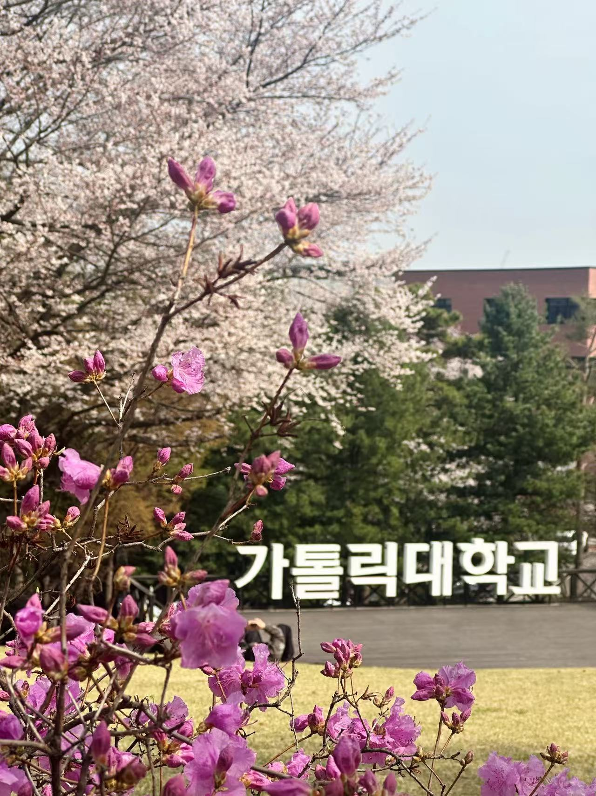
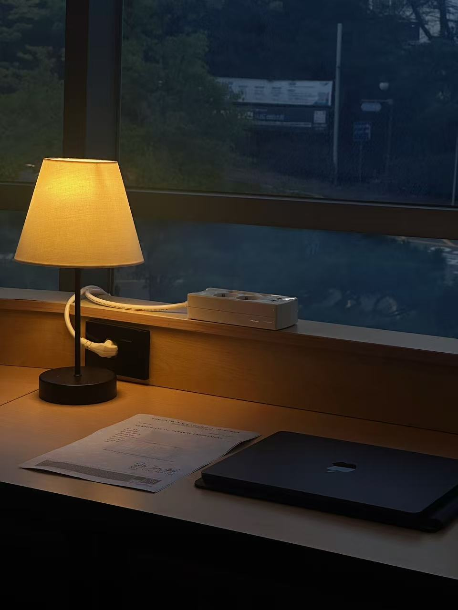

OUR CAMPUS · THREE PLACES
좋아하는 캠퍼스의
세 가지 풍경
공부하고, 식사하고, 잠시 쉬어 가는 곳을 소개합니다.

PLACE 01
학교 식당
음식은 맛있었고, 친구들과 식사하고 이야기를 나누며 공부에 필요한 에너지를 재충전할 수 있었습니다.
이곳을 추천해요
친구들과 식사하며 쉬어 가기 좋습니다.
정확한 위치는 확인 중입니다. 아래 원본 지도에서 위치를 확인해 주세요.
원본 Naver 지도 열기 ↗
PLACE 03
학교 잔디밭
넓고 편안한 잔디밭은 휴식을 취하기 좋은 곳입니다.
이곳을 추천해요
친구들과 산책하며 신선한 공기를 마셔 보세요.
정확한 위치는 확인 중입니다. 아래 원본 지도에서 위치를 확인해 주세요.
원본 Naver 지도 열기 ↗
PLACE 02
스터디룸
조용하고 깨끗한 환경과 학업 분위기 덕분에 공부에 집중할 수 있습니다.
이곳을 추천해요
시험공부를 하거나 어려운 문제를 풀 때 추천합니다.
정확한 위치는 확인 중입니다. 아래 원본 지도에서 위치를 확인해 주세요.
원본 Naver 지도 열기 ↗학교 식당 지도
지도를 준비 중입니다.
정확한 위치를 확인한 뒤 지도를 추가할 예정입니다.
사진 및 장소 소개: Liu Xintian의 기존 페이지